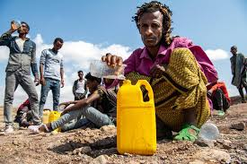
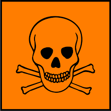

Imigración
La inmigración es el traslado de personas de un país o región a otro para establecerse temporal o permanentemente, motivado por razones como la búsqueda de mejores oportunidades económicas, la reunificación familiar o la huida de conflictos y persecuciones.

¿Por qué emigran?
Las personas emigran por diversas razones: en busca de mejores oportunidades económicas, huyendo de conflictos políticos o persecuciones, reuniéndose con sus familias o escapando de desastres naturales, todas con el objetivo de mejorar su situación o encontrar seguridad y estabilidad.

¿Cuales son las situaciones de riesgo?
Los migrantes enfrentan numerosos riesgos, como viajes peligrosos, explotación laboral, discriminación y xenofobia en su destino, violencia en sus países de origen y la inseguridad legal por falta de estatus migratorio, comprometiendo su seguridad y bienestar en varias etapas de su travesía y al llegar a su destino.